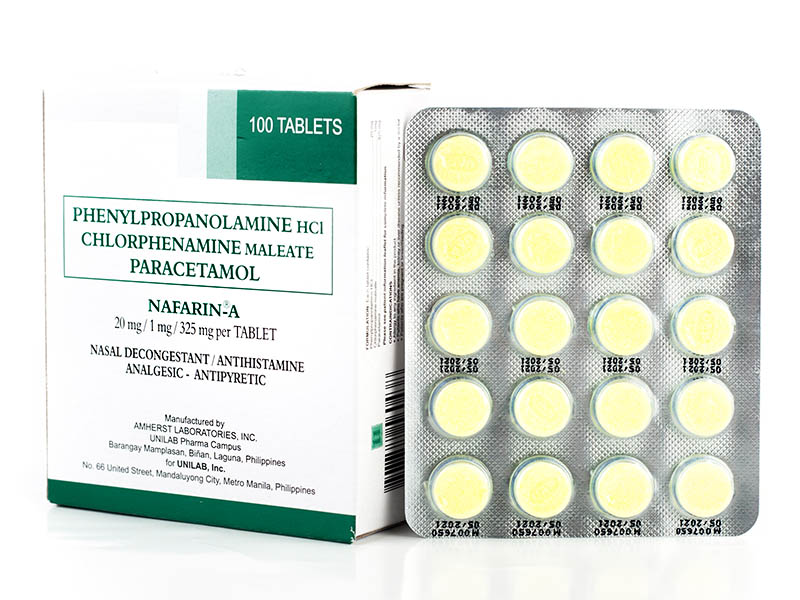

Medicine Guide For Sneeze

NEOZEP
Description
💊 Purpose:• Relieves cough, colds, and flu symptoms.
• Reduces nasal congestion and runny nose.
🔥 How It Works:
Contains phenylephrine (decongestant), paracetamol (pain reliever), and chlorphenamine (antihistamine) for multi-symptom relief.
💡 Common Use:
For cold, flu, and cough relief.
Unilab. (n.d.). Neozep Forte.
Guide
✅ Dosage:• Adults: 1 tablet every 6 hours.
• Children (6-12 years): ½ tablet every 6 hours.
🚫 Usage Limit:
Do not exceed 4 doses in 24 hours.
✅ Usage Tip:
Avoid alcohol while taking this medication.

• Relieves nasal congestion and allergy symptoms.
• Reduces runny nose, sneezing, and itchy eyes.
🔥 How It Works:
Combines phenylpropanolamine (decongestant) and chlorphenamine maleate (antihistamine).
💡 Common Use:
For allergic rhinitis and common cold symptoms.
Unilab. (n.d.). Nafarin-A.
• Adults: 1 tablet every 4-6 hours.
• Children (6-12 years): ½ tablet every 6 hours.
🚫 Usage Limit:
Do not exceed 4 doses in 24 hours.
✅ Usage Tip:
Take with food to prevent stomach upset.
NAFARIN-A
Description
💊 Purpose:• Relieves nasal congestion and allergy symptoms.
• Reduces runny nose, sneezing, and itchy eyes.
🔥 How It Works:
Combines phenylpropanolamine (decongestant) and chlorphenamine maleate (antihistamine).
💡 Common Use:
For allergic rhinitis and common cold symptoms.
Unilab. (n.d.). Nafarin-A.
Guide
✅ Dosage:• Adults: 1 tablet every 4-6 hours.
• Children (6-12 years): ½ tablet every 6 hours.
🚫 Usage Limit:
Do not exceed 4 doses in 24 hours.
✅ Usage Tip:
Take with food to prevent stomach upset.

DISUDRIN
Description
💊 Purpose:• Relieves nasal congestion due to colds or allergies.
• Reduces runny nose and sneezing.
🔥 How It Works:
Contains phenylpropanolamine (decongestant) and chlorphenamine maleate (antihistamine).
💡 Common Use:
For colds, flu, and allergic rhinitis.
Unilab. (n.d.). Disudrin Syrup.
Guide
✅ Dosage:• Children (2-6 years): 2.5 mL syrup every 6 hours.
• Children (7-12 years): 5 mL syrup every 6 hours.
🚫 Usage Limit:
Do not exceed 4 doses in 24 hours.
✅ Usage Tip:
Use the provided measuring device for accuracy.

LOPARED
Description
💊 Purpose:• Treats acute and chronic diarrhea.
• Reduces stool frequency.
🔥 How It Works:
Contains loperamide hydrochloride, which slows down gut movement.
💡 Common Use:
For diarrhea relief.
Unilab. (n.d.). Lopared Product Information.
Guide
✅ Dosage:• Adults: 2 mg after the first loose stool, then 1 mg after each subsequent stool.
• Maximum: 8 mg in 24 hours.
🚫 Usage Limit:
Do not use for more than 2 days without medical supervision.
✅ Usage Tip:
Stay hydrated while taking the medication.

SINUTAB
Description
💊 Purpose:• Relieves nasal congestion and sinus pressure.
• Reduces headache and fever.
🔥 How It Works:
Contains pseudoephedrine (decongestant) and paracetamol (pain reliever).
💡 Common Use:
For sinusitis, colds, and flu symptoms.
Johnson & Johnson. (n.d.). Sinutab Product Information.
Guide
✅ Dosage:• Adults: 1 tablet every 4-6 hours.
• Maximum: 4 tablets in 24 hours.
🚫 Usage Limit:
Do not use for more than 7 days without a doctor’s advice.
✅ Usage Tip:
Take with a full glass of water.

ALLERTA
Description
💊 Purpose:• Relieves allergy symptoms.
• Reduces sneezing, runny nose, and itchy eyes.
🔥 How It Works:
Contains loratadine, a non-drowsy antihistamine.
💡 Common Use:
For allergic rhinitis and skin allergies.
Unilab. (n.d.). Allerta Product Information.
Guide
✅ Dosage:• Adults: 1 tablet (10 mg) once daily.
• Children (2-12 years): 5 mg once daily.
🚫 Usage Limit:
Do not exceed the recommended dose.
✅ Usage Tip:
Take with or without food.

CLARITIN
Description
💊 Purpose:• Relieves allergy symptoms.
• Reduces sneezing, runny nose, and itchy eyes.
🔥 How It Works:
Contains loratadine, a non-drowsy antihistamine.
💡 Common Use:
For allergic rhinitis and chronic urticaria.
Bayer. (n.d.). Claritin Product Information.
Guide
✅ Dosage:• Adults and children (6+ years): 1 tablet (10 mg) once daily.
• Children (2-5 years): 5 mL syrup once daily.
🚫 Usage Limit:
Do not exceed the recommended dose.
✅ Usage Tip:
Take with water, with or without food.

BENADRYL
Description
💊 Purpose:• Relieves allergy symptoms and colds.
• Reduces sneezing, runny nose, and itchy throat.
🔥 How It Works:
Contains diphenhydramine, a first-generation antihistamine.
💡 Common Use:
For colds, hay fever, and allergies.
Johnson & Johnson. (n.d.). Benadryl Product Information.
Guide
✅ Dosage:• Adults: 25-50 mg every 4-6 hours.
• Children (6-12 years): 12.5-25 mg every 4-6 hours.
🚫 Usage Limit:
Do not exceed 6 doses in 24 hours.
✅ Usage Tip:
May cause drowsiness; avoid driving or operating machinery.